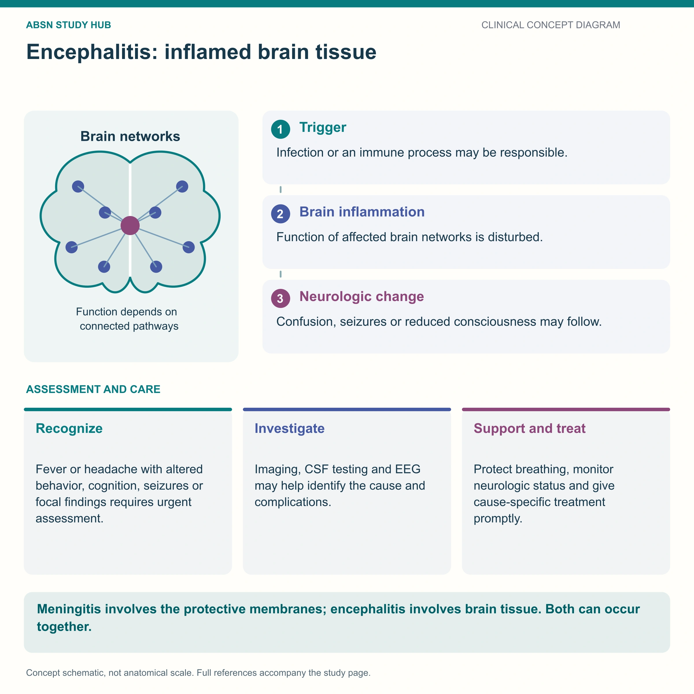

Inflammation of the brain tissue itself — not just its lining. Why altered mental status dominates, and how it differs from meningitis.

Which layer is inflamed decides every sign. And herpes encephalitis targets the temporal lobe, which is why it can look psychiatric.
Meningitis inflames the coverings. Encephalitis inflames the brain itself.
So meningitis gives you a stiff neck; encephalitis gives you altered thinking, seizures and focal deficits.
| Meningitis | Encephalitis | |
|---|---|---|
| Inflamed | Meninges — the covering | Brain tissue |
| Dominant sign | Nuchal rigidity, headache, fever | Altered mental status, confusion, personality change |
| Seizures | Possible | Common |
| Focal deficits | Uncommon | Common — weakness, speech, behavior |
| Commonest cause | Bacterial or viral | Viral — especially HSV-1 |
Herpes simplex encephalitis is the one that must not be missed. It targets the temporal lobe, so it presents with bizarre behavior, personality change, memory loss and smell/taste hallucinations — and it is treatable with IV aciclovir.
Aciclovir is started on suspicion, before confirmation. Waiting for the PCR result costs brain tissue.
| Test | Shows |
|---|---|
| CSF PCR | Confirms the virus — HSV, enterovirus, arbovirus |
| Lumbar puncture | Raised lymphocytes, mildly raised protein, normal glucose (unlike bacterial meningitis) |
| MRI | Temporal lobe changes in HSV |
| EEG | Seizure activity; temporal focus |
| CT before LP | If focal signs or reduced consciousness — rule out raised ICP |
Airway and safety first. A confused, seizing patient with a falling GCS needs airway protection — GCS ≤ 8 means intubation.
Never leave a confused, agitated encephalitis patient unattended with the rails down.
Mosquito-borne causes (West Nile, La Crosse, EEE) → repellent, covered skin, avoid dusk exposure, remove standing water.
Vaccine-preventable causes: measles, mumps, varicella, rabies, Japanese encephalitis.
These newly drawn concept diagrams consolidate the retired illustration sets. The accompanying study notes and original handout links remain on this page.